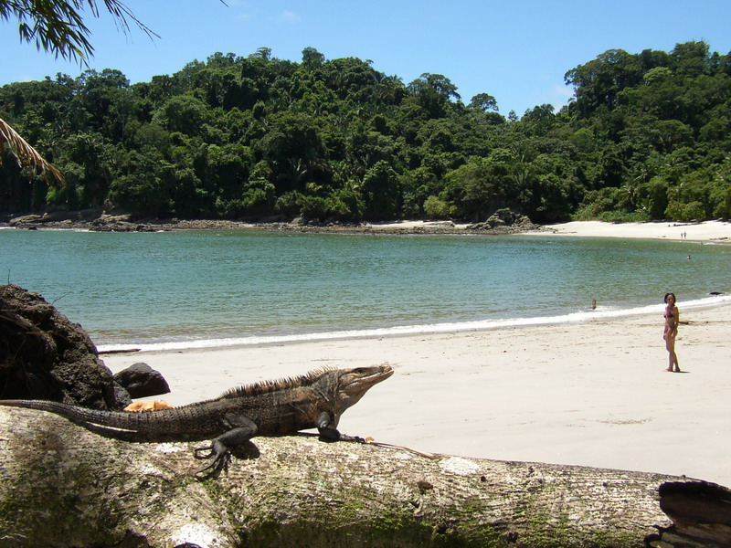

$
6765
zooave
El centro de visitación de Rescate Animal zooave esta conformado por mas de 950 especies en exhibición que no pudieron ser rehabilitadas ya que fueron mascotas, maltratadas o mutiladas y no pueden ser reinsertas a su habitad natural.
Conservación de Vida Silvestre
Nuestro centro de visitación es lo que actualmente conoces como Parque de Conservación de Vida Silvestre Zooave. Este centro tiene como objetivo crear conciencia entre la población sobre la problemática existente en el país en materia de vida silvestre y además recaudar fondos para financiar los diferentes programas con los que cuenta la fundación. Contamos con más de 950 especies en exhibiciones tanto silvestres como exóticas.

Encontrarás animales tales como pumas, avestruces, lapas, monos tití, perezosos, emús, martillas, búhos, lechuzas y el zopilote rey, entre otros. Estos animales están exhibidos en un área de 14 hectáreas. Además podrás vivir una experiencia única ya que dentro del parque observarás varias especies libres que conviven con los visitantes.
Los animales que se encuentran en exhibición dentro de nuestro centro de visitación, se caracterizan por no reunir todas las condiciones físicas, psicológicas y de comportamiento para ser liberados a su hábitat natural. Es por esta razón que al pagar tu entrada estás ayudando a proporcionar una mejor calidad de vida a los animales de exhibición y además contribuyes con la atención, rehabilitación y liberación de más de 1400 animales que ingresan anualmente a nuestro centro de rescate.